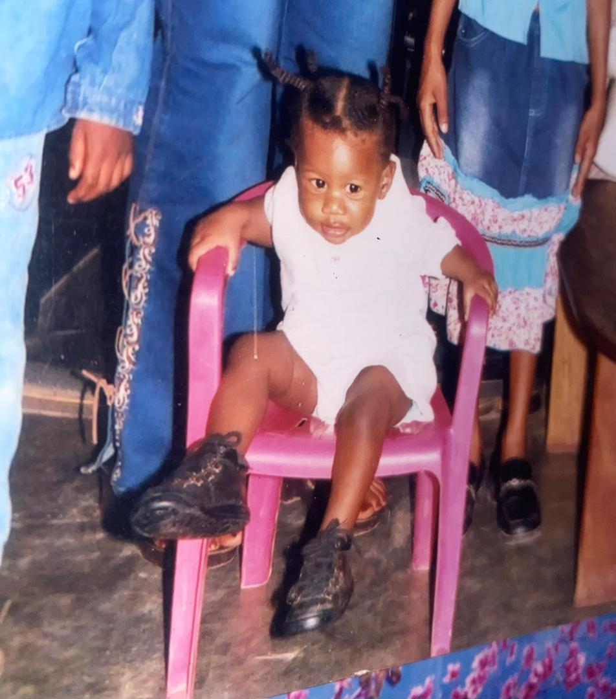

Photo d’enfance

Paroles quand elle était petite :
Depuis mon enfance, j’étais une fille souriante, pleine de rêves et
d’innocence. J’aimais apprendre, observer et poser beaucoup de questions.
Mon entourage voyait déjà en moi une personne déterminée, curieuse
et respectueuse, toujours prête à avancer malgré les difficultés.
Photo à l’âge adulte
Paroles à l’âge adulte :
Aujourd’hui, je suis devenue une femme responsable, passionnée et ambitieuse.
Mon parcours m’a appris la persévérance, la discipline et la confiance en moi.
Étudiante en classe préparatoire à l’Université de Lubumbashi, je poursuis
mon objectif de devenir une ingénieure exemplaire, guidée par le sérieux,
le travail et l’amour du savoir.
Tableau d’activités